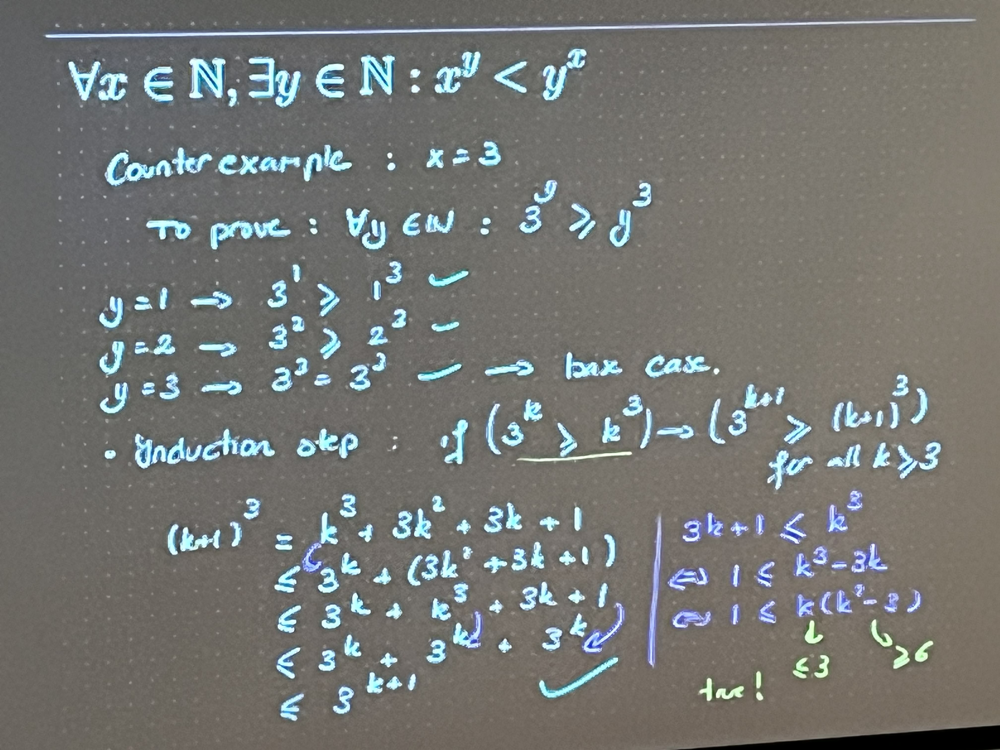

Lecture slides
Lecture notes
Can you calculate the sum 1+2+3 + ….+ (n-1) + n (with n a natural number)
-
- We can demonstrate this with a few examples
- Or we can demonstrate it through mathematical induction
Mathematical induction theory
Mathematical induction
Proof technique for statements of the form (set of integers from a starting point on, e.g. natural numbers)
- Two steps in the proof by induction:
- Base case (proof of ) → the statement holds for the first number
- Induction step: proof of
- Process of induction
- is true → base case
- → (induction step)
Induction example
Induction example
Base case: Proof of P(1)
- → This holds
** Induction step**: Proof of
- (assumption)
- (to prove)
-
- we see that
- We use our assumption
Induction example 2
Induction example 2
is divisible by
Base case: Proof of
- → 3 is divisible by 3$
Induction step: Proof of
- is divisible by 3 (assumption / hypothesis)
- is divisible by 3 (to prove)
Always use your assumption hypothesis!
-
- is divisible by 3 by assumption () →
- is also a multiple of 3
- → multiple of 3
Induction example 3
- Ask for notes on this example cause it was confusing as fuck
Induction example 3
A country has two types of coins: 3 cents and 7 cents. Prove that you can make all sums of money starting from 12 cents (up to 1 cent accuracy) from these coins.
Explaining the example Induction proof 3.loom Negation: max 1x7, max 1x3 → cannot add up to 12 or more
- If we have 2x3 (at least), we can go 1 cent up
- If we have 2x7 (at least), we can go 1 cent up
- We always have to have either (or both) 2x7, or 2x3
Proof by induction
- Base case: holds →
- Inductive step:
- q has at least 2 coins of 7 or 2 coins of 3
- r: at least 2 coins of 7
- s: at least 2 coins of 3
- is impossible, as q ≥ 1
- if r is true, then we can replace 3x7 by 5x3
- if s is true, then we can replace 2x3 by 7
- → in both cases, we can make q + 1
- q has at least 2 coins of 7 or 2 coins of 3
Induction example 4
An example like this won’t show up in the exam
Induction example 4 (Disproving with induction)
Counterexample: x = 3 To prove: (negation of the statement, with x=3)
Base case: → this is true → true → true
Induction step: if for all
